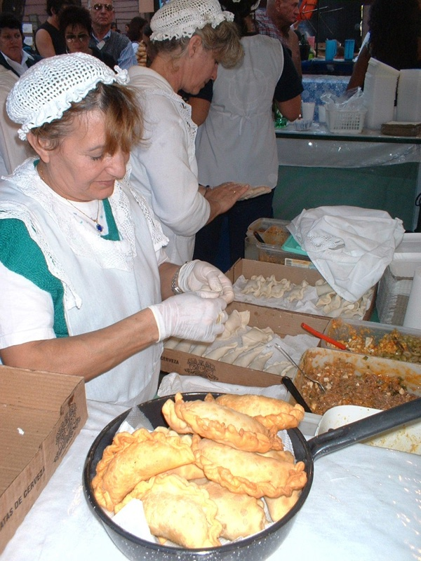
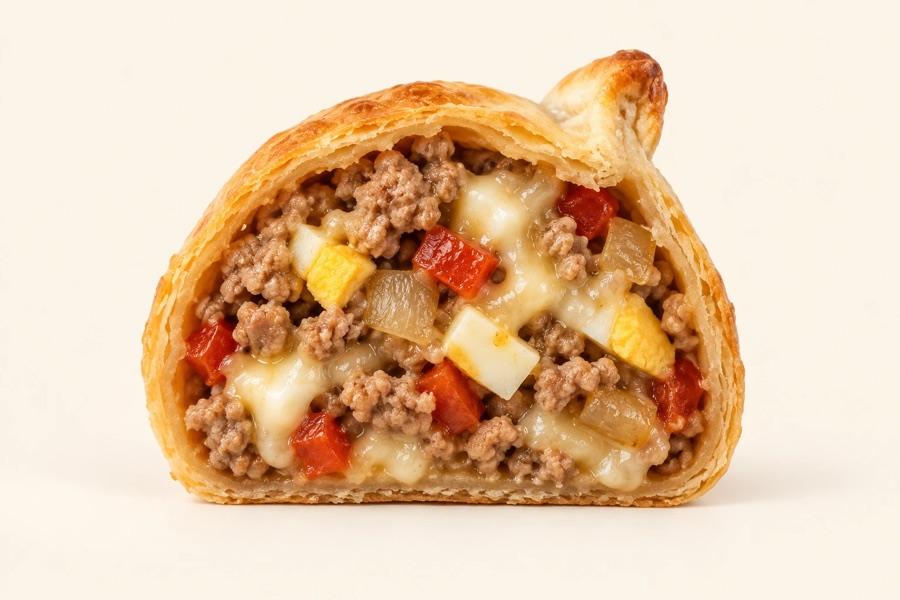
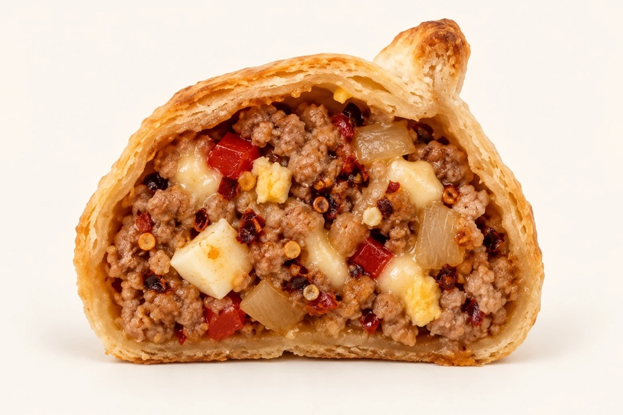
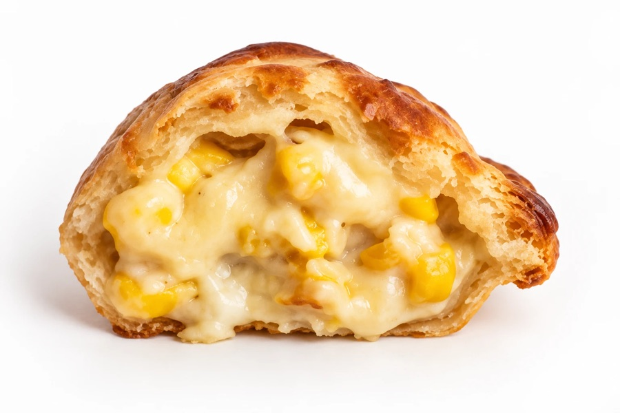
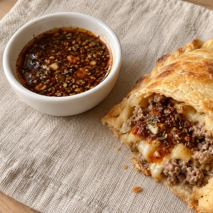
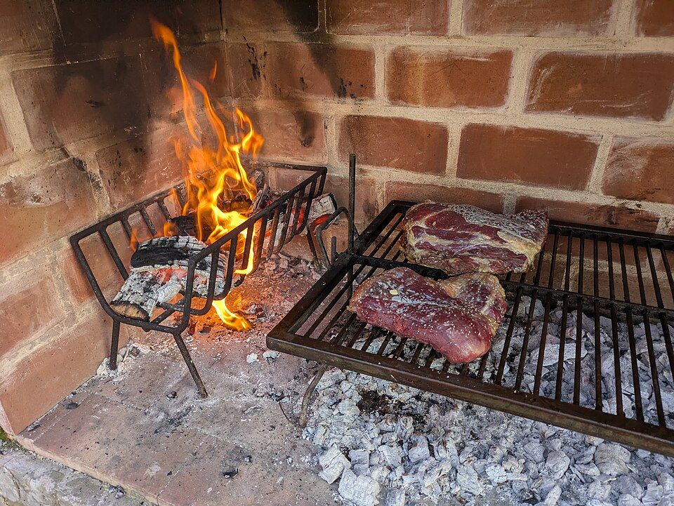
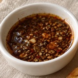

01 · EMPANADAS
什麼是 Empanadas？
麵皮包著餡料，烤或炸熟。名字來自西班牙文的 empanar，意思是「包起來」。在阿根廷的市集和街角都買得到。
照片：布宜諾斯艾利斯市集・Gadish・公有領域
阿根廷手工烤餡餅
來自阿根廷，親手包給你。

12/6（日）・成大校慶園遊會
15:00–21:00
Sabores
經典起司豬肉
炒香豬肉、蛋、紅甜椒，牽絲起司

香辣起司豬肉小辣
同一鍋豬肉餡，微微辣、越吃越香

奶香玉米起司含蛋奶
香甜玉米、奶油白醬、滿滿起司（含洋蔥）
三個口味都含蛋、奶、小麥。每顆手掌大。
CHIMICHURRI・第二種吃法

阿根廷烤肉桌上的經典搭配。我用乾香料與紅椒粉調製，蒜香、微酸、微辣，沾著餡餅吃，多一層香氣。
3 顆／6 顆預購組合，附醬一杯（60 ml）
Preventa
預購保證買得到、不用排隊，還能自己選取貨時段。3 顆和 6 顆附一杯 Chimichurri 醬。
預購還剩 -- 顆・讀取中⋯
現場價加總，再減 10 元
豬肉兩顆 140、一豬一玉米 130、玉米兩顆 120
口味自由選＋阿根廷 Chimichurri 醬一杯
附贈醬料一杯（60 ml），價值 $35・現場買 3 顆最多 225 元
口味自由選＋阿根廷 Chimichurri 醬一杯
附贈醬料一杯（60 ml），價值 $35・現場買 6 顆最多 450 元
預購不開單顆。
當天另有隱藏口味，僅限現場購買，不開放預留。
La historia de Nana
成大的阿根廷學生只有三個，我是其中一個。畢業前最後一次校慶，想把家鄉的味道帶給你。
給成大的你：
Hola，我是 Nana，來自阿根廷，現在是成大的大四學生。
在成大，來自阿根廷的學生少到一隻手就數得完，目前只有三個。每次介紹自己來自哪裡，我都覺得，除了地圖上的位置，還有好多家鄉的日常，想分享給大家。
趁著畢業前最後一次校慶，我想完成一個一直放在心裡的小夢想：親手做 empanadas，把熟悉的家鄉味道帶到你面前。
對你來說，這可能是第一次嘗試的新口味；對我來說，卻是想念家鄉時會惦記的滋味。想到能在成大和大家分享，就覺得很期待。
阿根廷在世界的另一端，路途很遠，機票也不便宜。但也許不用搭上長途飛機，在校慶逛攤位的時候，就能先嚐到一點阿根廷的日常。
很開心能在畢業前，讓我遠方的家，和這幾年生活的成大，有這樣一次相遇。
12/6，期待把這份味道分享給你。
從街角市集，到一起分享的餐桌。

01 · EMPANADAS
麵皮包著餡料，烤或炸熟。名字來自西班牙文的 empanar，意思是「包起來」。在阿根廷的市集和街角都買得到。
照片：布宜諾斯艾利斯市集・Gadish・公有領域
03 · FÚTBOL
1978、1986、2022，三次世界盃冠軍。從馬拉度納到梅西，足球讓不同世代一起歡呼。
照片：2022 世界盃奪冠，方尖碑前的慶祝・GCBA・CC BY 2.5 AR

04 · ASADO
Asado 是阿根廷的烤肉聚會。顧著炭火、聊著近況，把一頓飯吃成相聚的時光。

這次附的 Chimichurri，就是阿根廷烤肉桌上常見的搭配。也可以沾著 empanadas，試試另一種吃法。
照片：Maxd2・CC BY-SA 4.0
Cómo retirar
只用來核對取貨和聯絡你，不會做別的用途，活動結束後會刪除。
超過你選的時段 30 分鐘沒來，那份會放到現場賣。
有問題請直接用 LINE 跟我們說，會一起想辦法。
為必填
12/6（日）・每個時段名額有限，額滿就不能選
想換付款方式，再點一次已選的那一個。